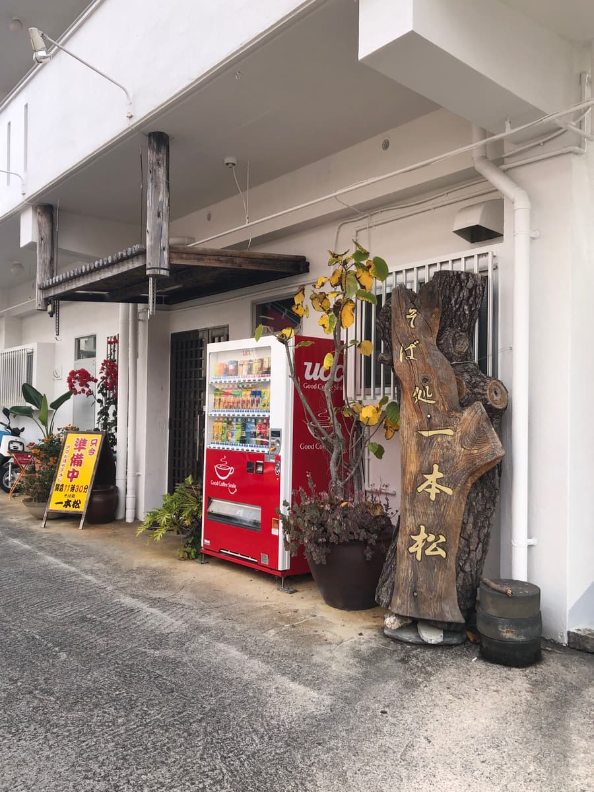
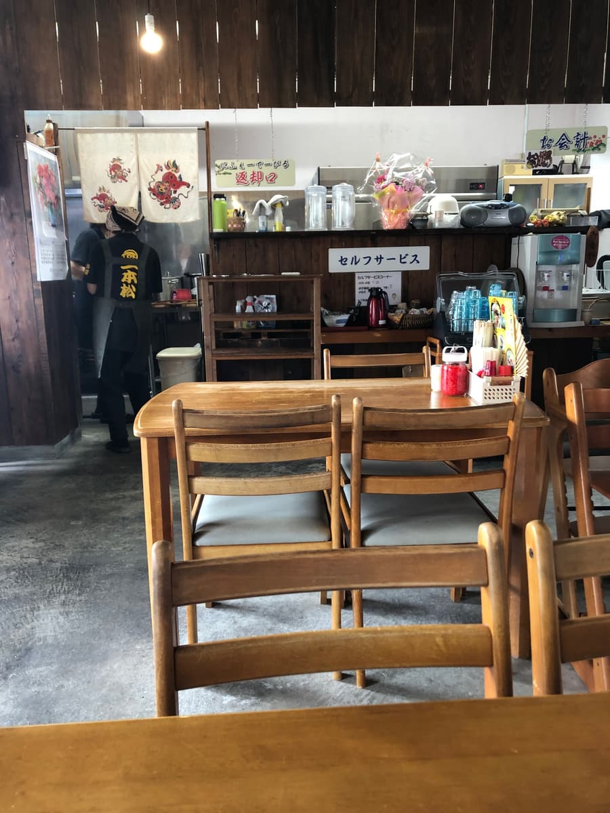
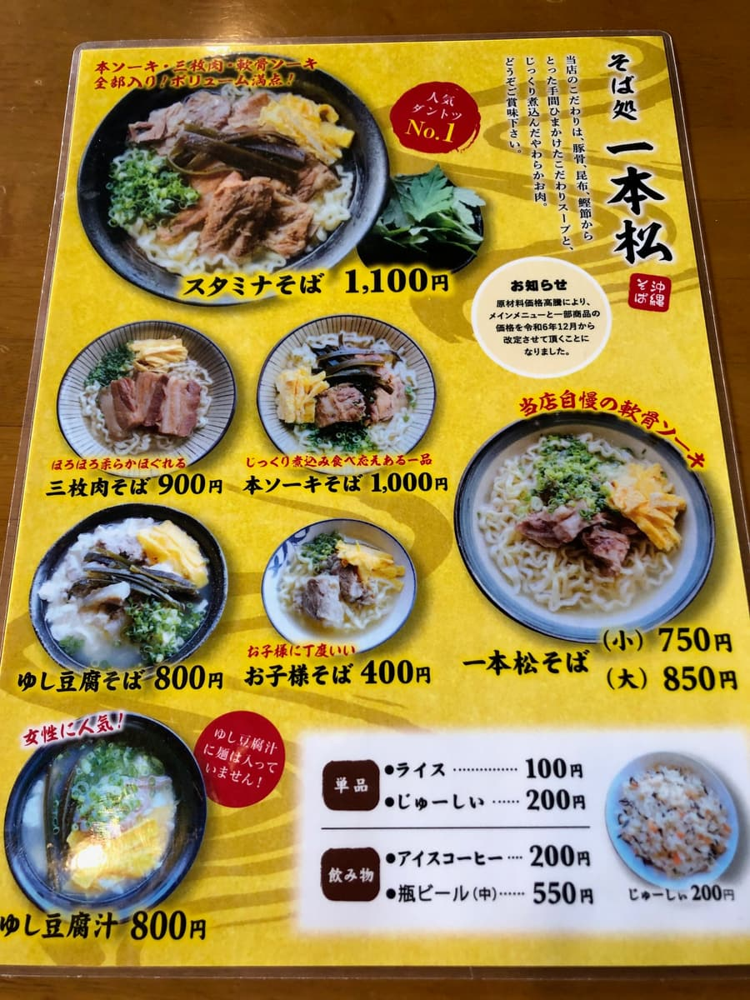
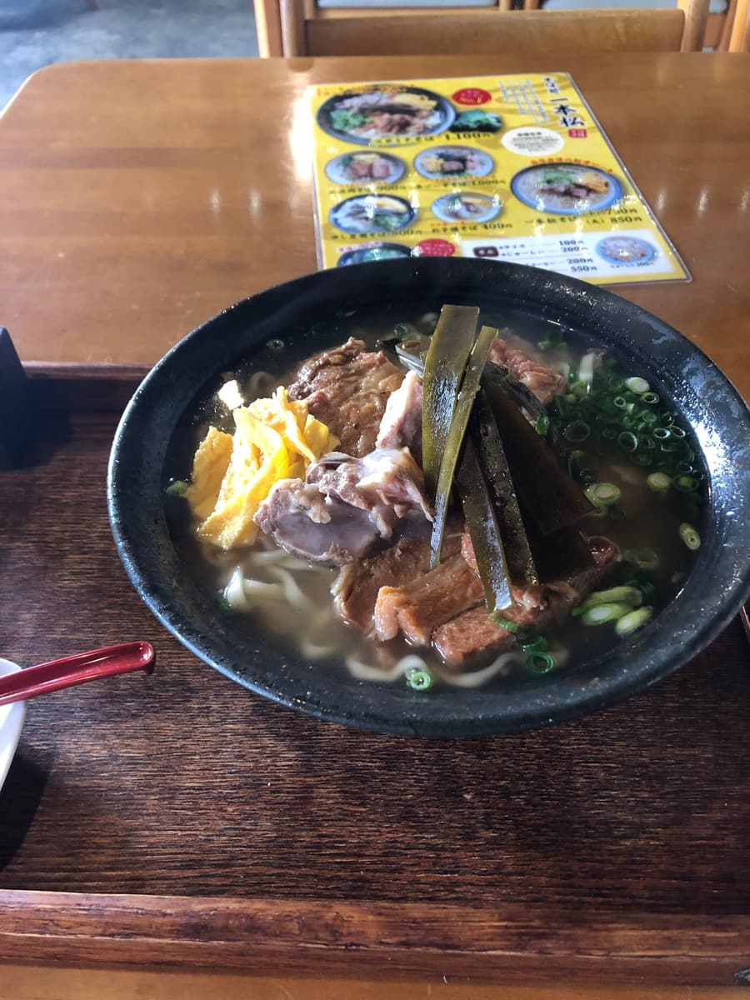
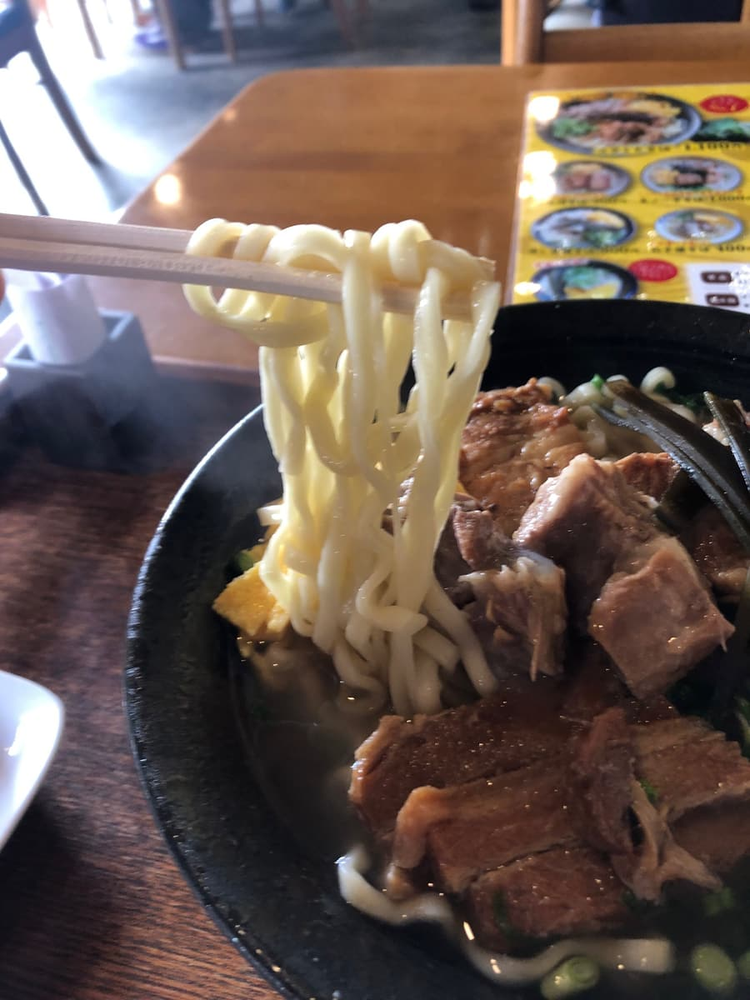

※이 글은 AI(Chat GPT 5Thinking)를 베이스로 일부 가필하여 작성했습니다😁
이번에는 2025년 1월에 먹었습니다😆 우라소에시 도잔의 주택가를 빙 돌아 겨우 찾은 '소바도코로 잇폰마쓰', 새하얀 외벽에 떡하니 자리 잡은 목각 간판이 멋있어서 저도 모르게 사진을 한 장 찍었어요📸

옆에는 새빨간 자판기, 발치의 화분이 살포시 계절의 색을 더하고 있어서, 현지 식당다운 공기가 입구에서부터 벌써 풍겨 오네요. 간선도로에서는 조금 벗어나 있어 처음 방문하면 헤매기 쉽지만, 개점과 동시에 동네 분들이 줄줄이 들어가는 모습을 보고 '이건 틀림없다~' 하며 기대감이 쑥쑥 올라갔습니다😊

가게 안은 나무 테이블과 의자가 깔끔하게 닦여 있고, 벽 쪽에는 셀프 물과 차, 붉은 생강 초절임, 조미료가 놓여 있습니다.

메뉴를 펼치니 노란 지면에 사진이 쭉 나열되어 있습니다. 가게 추천 '스태미나 소바' 1,100엔이 크게 추천되어 있고, 가게 이름을 붙인 '잇폰마쓰 소바'는 소 750엔·대 850엔, 어린이 소바 400엔, 그리고 유시두부(오키나와 순두부) 소바·유시두부 국이 각 800엔. 밥 100엔, 주시(오키나와식 영양밥) 200엔, 아이스커피 200엔, 병맥주 중 550엔으로, 가격은 관광객에게도 현지인에게도 부담 없는 균형입니다💴 물론 이번에는 인기 압도적 1위인 '스태미나 소바'를 주문했습니다.

검은 그릇이 나무 쟁반에 담겨 도착한 순간, 김과 함께 은은하게 풍기는 것은 돼지뼈·다시마·가쓰오부시 혼합 육수에 겹쳐지는 마늘의 부드러운 향. 먼저 한 입… 국물은 목넘김이 맑고, 가쓰오의 윤곽이 쓱 앞으로 나오네요🐟

면은 중간 굵기의 느슨한 곱슬면으로, 후루룩 잘 들어가는 부드럽게 삶아진 상태🍜
고명은 이름값을 하는 스태미나 삼중주. 주인공인 고기는 세 종류 모둠으로, 그릇의 절반을 차지하는 큼직한 존재감. 삼겹살 조림(산마이니쿠)은 간이 제대로 배어 있고 힘줄 같은 질긴 식감은 다소 강한 편. 연골 돼지갈비(난코츠 소키)는 부드럽게 녹는 담백한 마무리로, 탱글탱글한 콜라겐까지 하나로 어우러질 정도로 부드럽고 기름기가 깔끔한 것이 인상적. 뼈 있는 돼지갈비(혼소키)는 기름을 빼서 고급스럽게 마무리하면서도, 이쪽도 힘줄의 탄력이 강한 편입니다🥢 도중에 무료 후치바(쑥)를 솔솔🌿
전체적인 인상은 '일상에 가까이 있는 만족스러운 소바'. 현지 손님들이 개점 직후부터 모이지만, 주택가 안쪽에 있는 입지 덕분에 차분한 분위기를 유지하고 있는 것도 좋네요🏡
평가(9점/15점)：다만 오키나와 소바의 맛으로는 결국 '평범하게 맛있다'로 귀결되는 느낌이네요😌 여러분도 한 번쯤 이 가게에 가 보시는 건 어떨까요?😆
면: ★★★☆☆（3）
수프: ★★★☆☆（3）
토핑: ★★★☆☆（3）